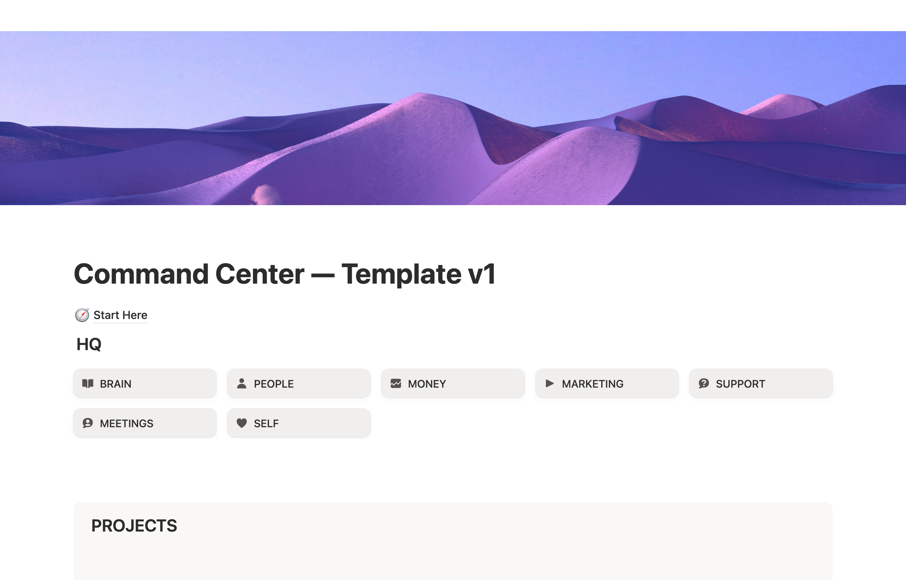

Welcome
Let's get your Founders’ Brain set up.
This is the whole thing, start to finish, on one page. It all happens in the Claude desktop app (Cowork). Two parts: the install (about fifteen minutes, we do it together on our call) and the brand interview right after, where your Founders’ Brain learns your business (another fifteen to twenty, and it is a conversation, not a form). Have a read before we talk so nothing is a surprise, then keep it to look back on.
You do not have to do any of this alone. We go through it together on our call, live: the install takes about fifteen minutes, and the brand interview another fifteen to twenty.
And you cannot break anything. Nothing gets deleted, and every real change asks you first. If a step ever looks off, we just stop and sort it.
Before our call
Five minutes of prep and the call itself is smooth. Two accounts, one app, then a short list to have within reach.
-
A Notion account
The free plan runs everything, and free is all you need. Sign up at notion.so with your email or Google, and pick "for personal use" if it asks.
Ready when: Notion opens and you see your sidebar.
-
Claude Pro
$20 a month, and the free plan will not work for this: plugins and Cowork need a paid plan. Sign up or log in at claude.ai, then Settings, Billing, subscribe to Pro.
Ready when: your account shows Pro.
-
The Claude desktop app
Download it at claude.com/download (Mac or Windows, the steps are identical), install it, and log in with the SAME account you just upgraded. The website and the phone app cannot do the setup.
Ready when: Claude opens as its own app and you are signed in.
-
Your logins, within reach
The number one thing that stalls a setup is hunting for a password halfway through. Two minutes now saves the headache.
And for the interview, have these handy
Right after the build, your Founders’ Brain interviews you about your business. Fifteen to twenty minutes, conversational, no wrong answers. It goes fastest when you have:
-
A link to your website or your main social profile
Or any doc that describes your business. Give it that and it drafts most of your profile on its own; you just correct what it got wrong.
-
Your offers, with prices
Everything you sell, what each thing costs, and which one is the main offer right now.
-
An honest picture of where the business is today
The system shapes itself around the truth, not the ambition. Be honest about where you are TODAY.
That is all the homework there is. You talk, it writes.
What you're getting
One core system, plus add-ons that snap on when you want them. Each one is a single file that goes in the same way.
-
The core
Command Center
Your whole business, organized in Notion, that fills itself in as you talk. Your phone quick-add, Capture, is built right in.
-
Add-on
Compass
Goals, a daily check-in, and a straight answer to "am I on track?" whenever you ask.
-
Add-on
Ghostwriter
Writes in your voice. Newsletters, posts, pages, sales copy, all of it, drawn from what your Founders’ Brain already knows about you.
-
Add-on
Outreach
Keeps your relationships warm and drafts messages that sound like you, not a robot.
More on the way. New add-ons land regularly. When one arrives that fits you, it installs exactly like the rest: one file, about thirty seconds. You will never have to relearn anything.
The setup, step by step
We will do these together on the call. Here is the whole path so you know what is coming.
-
Create your Founders’ Brain project
In the Claude desktop app, create a new project (Cowork calls them projects). Name it whatever you like. This is your home base: where your Founders’ Brain lives and where we work every session.
One thing worth knowing now: this is the only project you will ever create in the Claude app. Later you will hear a lot about projects for your launches, offers, and clients; those live in Notion, and your Founders’ Brain builds them for you. In the Claude app there is just this one home base.
Screenshot to add assets/shot-1-new-project.png The new-project screen in the Claude desktop app. Creating a project gives your Founders’ Brain a home base it remembers every time you open a chat.You'll know it worked when the project shows up in the sidebar and opens to a fresh, empty chat.
-
Copy your Notion template
Go to
thefoundersbrain.com/templateand click Duplicate (the icon at the top right). That drops a fresh, private copy into your own Notion. This is where your Founders’ Brain keeps everything.
The template you land on. To copy it, click Duplicate, the icon at the top right of the page. You'll know it worked when a page called Command Center — Template appears in your own Notion sidebar.
-
Let Claude see your Notion
Connect the Notion connector in Claude and click Allow. This is what lets your Founders’ Brain read and build inside your workspace. It only ever touches your own workspace, nothing else.
Screenshot to add assets/shot-3-allow.png The Notion connector's Allow screen. Clicking Allow is what lets your Founders’ Brain read and build inside your Notion, and nowhere else. Blur anything personal.You'll know it worked when Notion shows as connected in your Connectors list.
-
Get your files from me
I send your plugins to you directly: the core, plus any add-ons you have. Save them somewhere you can find them (your Downloads folder is fine).
You'll know it worked when you can see the plugin file (or files) in your Downloads.
-
Add each plugin in the Claude desktop app
Same quick path for every file. Do the core first, then each add-on the same way.
Customize → Personal plugins → + → Create plugin → Upload plugin → pick the file I sentScreenshot to add assets/shot-4-personal-plugins.png The Personal plugins menu (Customize → Personal plugins). This is where every plugin gets added to Claude.Screenshot to add assets/shot-5-upload.png The Upload plugin file picker with your.pluginselected. This is the moment the plugin file goes in.Screenshot to add assets/shot-6-installed.png Your plugins listed as installed. Confirms they loaded and are ready to use.You'll know it worked when each one appears in your Personal plugins list.
-
Restart the app
Fully quit and reopen the Claude desktop app. Plugins only wake up on a clean start, so this one matters.
-
Say the word
Open a new chat inside your project and say
set up my command center. That is the moment your Founders’ Brain comes alive and starts building your system with you.Screenshot to add assets/shot-7-setup.png A fresh chat right after you sayset up my command center. This wakes the system up and starts building with you.You'll know it worked when it answers by asking for your business name and your first name. That is it waking up.
What happens when you say it
The play-by-play after "set up my command center", so nothing on the call feels surprising.
-
Two quick questions
Your business name and your first name. That is all the typing in the whole build.
-
A taste while it works
It offers to look at your website (or one sentence about what you do) and reflects your business back at you while the build runs. Say yes; it also makes the interview faster later.
-
It checks your copy of the template came in clean
And quietly repairs the small things Notion sometimes bends when a page gets duplicated. You will not see this part; it just happens.
-
It makes the workspace yours
Your brand on the title, your seven zones labeled, a few welcome entries so nothing opens looking dead.
-
It switches on your automatic reports
The morning brief every day at 7, a who-is-going-cold check on Mondays, and two Friday reports (the patterns in your ideas, and the weekly recap). Your first report lands tomorrow morning.
-
Then the brand interview, straight away
Fifteen to twenty minutes of conversation about who you serve, what you sell, and how you sound. This is what the prep list at the top of this page is for.
-
And the finale
It builds you one real, branded asset you can use the same day. That is the moment it clicks.
The build itself takes six to eight minutes and it narrates while it works. If it asks you something mid-run, that is normal and good. Answer in plain English. There is no wrong answer.
Already set up? Adding an add-on or re-installing
If your Founders’ Brain is already running and you just need to add an add-on (or re-load a plugin after an update), skip everything above. It is three quick steps, no re-doing Notion.
-
Save the file I sent
For an add-on it is a new
.plugin. For an update it is the newer version of one you already have. -
Upload it the same way
An update just replaces the old one.
Customize → Personal plugins → + → Create plugin → Upload plugin → pick the file -
Restart, then use it
Quit and reopen the app, start a new chat inside your project, and say the add-on's magic words. No re-duplicating Notion, no re-doing your setup.
Something not working?
-
Not all your tools showed up
Usually an older file or an app that needs a restart. Ask me for the latest file, re-upload it (step 5), then fully quit and reopen the desktop app. Plugins only reload on a clean start.
-
The file won't upload
Make sure you are on the latest Claude desktop app and uploading the
.pluginfile exactly as I sent it (not unzipped, not renamed). If it still refuses, send me a screenshot and I will sort it. -
It says it can't find your template
The duplicate did not happen, or it landed under an odd name. Open Notion, copy the link of the template page in your sidebar, paste it into the chat and say "here's my template". It takes it from there.
-
It's building, but nothing shows up in Notion
Almost always the permission popups: click Allow when Claude asks to write to Notion (there is an option so it stops asking every time). And double-check Notion is connected with the same account you duplicated the template into.
-
The app won't open, or it's running slow
That is before your Founders’ Brain is even involved. Restart the app, and your computer if it is sluggish, update to the latest version, then try step 5 again.
Quick answers
-
Do I have to pay for Notion?
No. The free plan runs the entire system for one person. The only subscription is Claude Pro.
-
Do I need Notion AI?
No, skip it. Your Founders’ Brain does the thinking, and it works better than the built-in one. Save the money.
-
Why does it feel slower or flatter some days?
Usually the chat just got very long. Open a fresh chat inside your project and say "catch me up". You lose nothing: your system's memory lives in Notion, not in the chat.